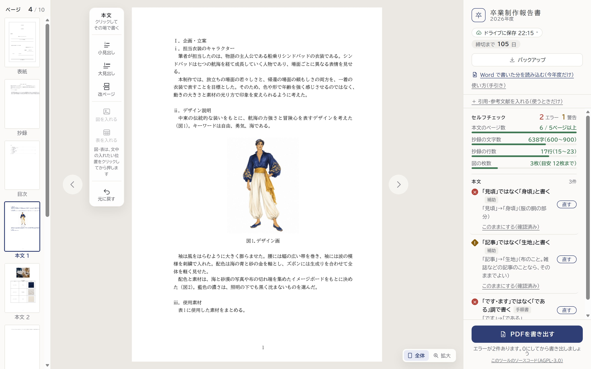
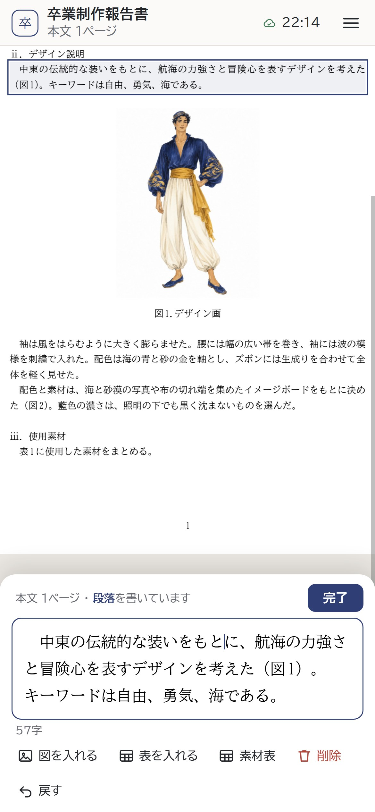

卒業制作報告書 作成ツール
学生用FOR STUDENTS2026年度
卒業制作報告書を、表紙から作品写真まで、決まった形のまま書けるツールです。パソコンでもスマホでも使えます。くわしい操作は、ツールの画面に説明が出ます。
01はじめる・書く p.202保存と PDF p.303困ったとき p.4


@bunka-wu.ac.jp のアカウントで。ログインするまでは書けません。
この端末と、自分の Google ドライブに保存されます。保存の操作はいりません。
セルフチェックのエラーを0件にすると、提出用の PDF を書き出せます。
CHAPTER 01 ─ START & WRITE
はじめて開くと、ログインのあと、表紙の上に案内が出ます。そのとおりに進めます。くわしい操作は、ツールの画面に説明が出ます。
大学のアカウントでログイン を押し、@bunka-wu.ac.jp のアカウントを選びます。
自分のコースを押すと、本文にコースの下書き（章立て）が入ります。
今年度だけ。Word に書いた人は「はい」（別紙「Word で書き始めた人へ」）、ほかは「いいえ」。
学籍番号はアカウントから入ります。氏名・サブタイトルを書いて Enter。
LINE・Instagram などのアプリの中で開くと、ログインできません。Safari・Chrome で開き直します。ログインの窓が開かないときは、ポップアップを許可します。
段落をクリック（スマホはタップ）すると、その場で書けます。Enter で次の段落へ。薄い字は「何を書くか」の説明で、書くと消えます。
文中の入れたい位置をクリックしてから 図を入れる2 表を入れる3。本文に「（図1）」、すぐ下に図が入ります。
作品写真のページの枠をクリックして、写真を選びます。
本文を書き終えて許可が出たら、抄録のページの 先生の許可が出た を押して書きます。
手順書のルールに合っているかを、ツールが確かめます。直すところが、右の欄（スマホは下の「チェック」）に出ます。
手順書のルールなどに合っていないところ。0件にしないと、提出用の PDF を書き出せません。
確かめて、よければそのままで構いません。
押すと、正しい形に直ります。指摘を押すと、その箇所へ移ります。
「補助」の印の指摘で、書いたとおりで正しいときに押します。
CHAPTER 02 ─ SAVE & PDF
原稿は自動で保存されます。書き終えたら、エラーを0件にして、PDF を書き出します。
使い終わったら ドライブに保存 → この端末から原稿を消す2。Google からのログアウトも。
2つのタブで開くと、あとから開いた方では書けません。もう一方を閉じて こちらで続ける。
セルフチェックの × がなくなるまで直します。
右の欄のいちばん下（スマホは下の「PDF」）。
題目は申告書と同じか・作品写真は自分で撮ったものか・指導教員の了承を得たか。印刷の画面を開く を押します。
下の表のとおりに選びます（ツールの画面にも、使っている端末の手順が出ます）。ファイル名は「2026_卒業制作報告書_学籍番号_氏名.pdf」。保存したら開いて、ページの数と写真を確かめます。
| 使っている端末 | 印刷の画面で選ぶもの |
|---|---|
| パソコンの Chrome・Edge | 送信先：PDF に保存（Edge は PDF として保存）／用紙サイズ：A4／倍率：既定（100%）／詳細設定の「ヘッダーとフッター」：オフ、「背景のグラフィック」：オン |
| Mac の Safari | 詳細を表示 → 用紙サイズ：A4／「背景をプリント」：入れる／「ヘッダとフッタをプリント」：外す → 左下の PDF から PDF として保存 |
| iPhone・iPad | 右上（または下）の 共有のボタン（四角に上向きの矢印）→ "ファイル"に保存 → 場所を選んで「保存」。うまくいかないときは、パソコンで |
| Android | 上のプリンターを PDF 形式で保存 に／用紙サイズ：A4 → PDF のボタン を押して保存 |
CHAPTER 03 ─ Q & A
よくある困りごとと、そのときにすることです。書いた原稿は、ふつうは消えません。あわてずに。
Qログインできない
Q「もう一度ログインしてください」と出た
Google の決まりで、ログインの許可は約1時間で切れます。ログインし直す を押してください。押すまでも、書いた分はこの端末に保存されていて、消えません。
Q「別の端末で書いた原稿が、ドライブにあります」と出た
別の端末で書いたあと、この端末でも書いたときに出ます。どちらで続けるかを選びます（ふつうは「新しい」の印の方）。選ばなかった方は「自動の控え」に残ります。
Q「PDFを書き出す」で提出用が出ない
エラーが残っています。出てきた一覧（またはセルフチェック）の項目を押すと、その箇所へ移るので、直します。抄録をまだ書いていないときもエラーです。途中経過を見せるときは「下書きの PDF」を使います。
Q原稿が消えた・前の状態に戻したい
直前の操作は、道具の 元に戻す で戻せます。それより前に戻すときは、バックアップ の「自動の控え」（10分ごと）から この時点に戻す。原稿はドライブにもあるので、ほかの端末でもログインすれば開きます。
QWord で書いた分を移したい（今年度だけ）
右の欄（スマホはメニュー）の「Word で書いた分を読み込む（今年度だけ）」から、自分の Word（04_本文.docx・01_表紙.docx）を選びます。くわしくは、別紙「Word で書き始めた人へ」を見てください。
どの画面で、何をしたら、何と出たかを伝えると、早く解決できます（画面の写真があると確実です）。